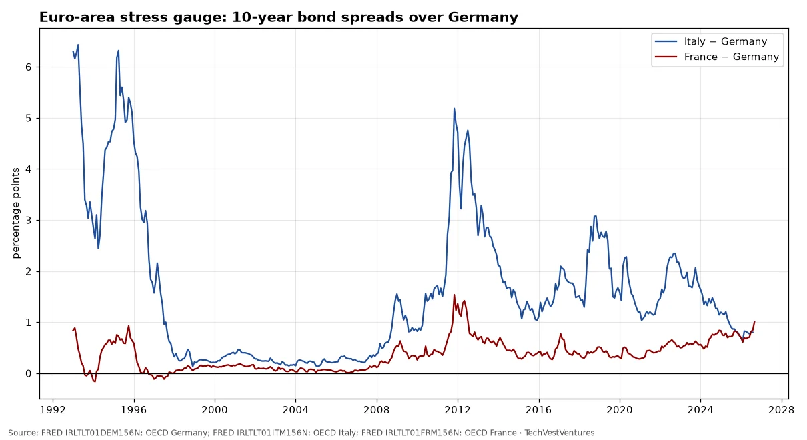
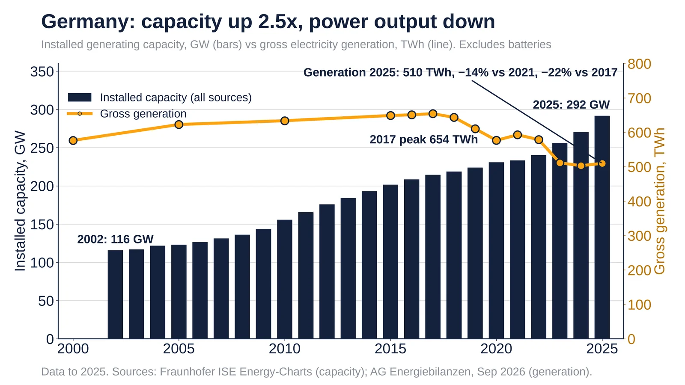
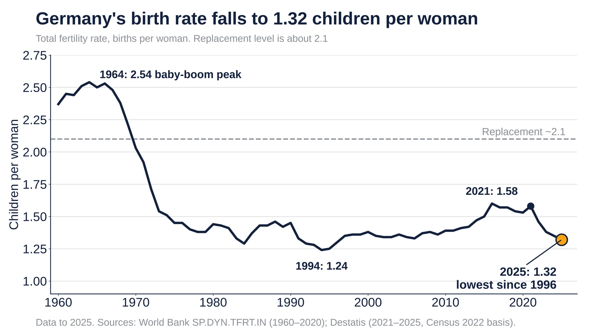
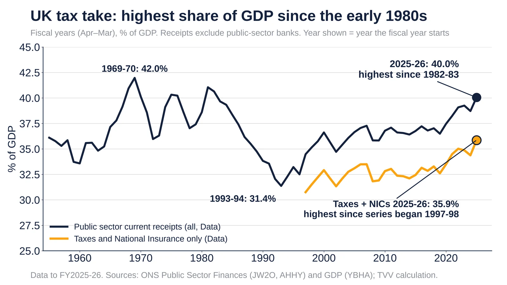

Q3. Europe Bonds

IMF World Economic Outlook general government gross debt, % of GDP (latest year in FRED shown in legend). China's ratio has more than doubled since the mid-2010s on the IMF measure, which excludes much local-government financing-vehicle debt.
Sources: FRED GGGDTAJPA188N: IMF WEO Japan FRED GGGDTAITA188N: IMF WEO Italy FRED GGGDTACNA188N: IMF WEO China

Monthly OECD long-term yields. France–Germany spread 1.01 pts in Sep 2026; Italy–Germany 0.80 pts in Aug 2026. Italy's spread peaked at 5.18 pts in Nov 2011 during the euro debt crisis. Since 1993 France's spread has exceeded Italy's only in Dec 2025, Jan 2026, Jul 2026 and Aug 2026 (latest month with both): markets now price French fiscal risk on a par with Italy's.
Sources: FRED IRLTLT01DEM156N: OECD Germany FRED IRLTLT01ITM156N: OECD Italy FRED IRLTLT01FRM156N: OECD France

Monthly 10-year government bond yields (OECD via FRED), latest Sep 2026 (Italy Aug). Japan's 3.05% is the highest since 1996; the UK's 5.24% and the US 4.99% are the highest since mid-2007; France since 2008 and Germany since 2009. The IMF's Oct 13 blog says the G7 average 10-year yield is the highest in nearly two decades and warns of the fiscal stakes. Cycle count: since 1990 the US 10-year has made three major cyclical peaks (late 1994, early 2000, mid-2007); two were followed by a US recession within about 1-2 years (2001, 2008-09) and one by a soft landing (1995). Three cycles with a 2-of-3 hit rate is right at Michael Hentschel's threshold, so read it as a warning, not a prediction.
Sources: FRED IRLTLT01USM156N (and DE, FR, IT, JP, GB, CA) IMF blog, Oct 13, 2026
Sep 2026 10-year yields: France 4.48%, about 1.0 pt over Germany. See charts M20 and M27. Source: OECD via FRED.
Data
- Sep 2026 (Data): France 4.48%, Germany 3.47%, Greece 4.23%, Portugal 3.85%.
- Aug 2026 (Data): Italy 3.99%, below France.
Doubt: the viral 174bp spread figure could not be verified. OECD monthly data show about 101bp over Bunds. The ranking (France above Italy, Greece and Portugal) holds.
See chart M20: Euro-area 10-year spreads over Germany (Q3 Europe Bonds tab) See chart M27: G7 long rates (Q3 Europe Bonds tab)
Sources: FRED IRLTLT01FRM156N: OECD France FRED IRLTLT01DEM156N: OECD Germany FRED IRLTLT01GRM156N: OECD Greece FRED IRLTLT01PTM156N: OECD Portugal FRED IRLTLT01ITM156N: OECD Italy

Germany 2025: 292 GW installed (2.5x 2002), but generation 510 TWh, −14% vs 2021. Energy-Charts, AGEB.
Data
- 2002 → 2025 (Data): installed capacity rose from 116 GW to 292 GW, mostly solar and wind.
- 2017 (Data): gross generation peaked at 654 TWh.
- 2025 (Data): generation 510 TWh, −14% vs 2021 and −22% vs 2017; renewables 58% of output.
- Apr 2023 (Data): Germany closed its last nuclear plants; nuclear capacity is now zero.
Caveat: solar and wind run far fewer hours than coal or nuclear, so rising capacity with falling output is partly by design. Lower demand and imports also cut generation.
Sources: Fraunhofer ISE Energy-Charts, installed power AG Energiebilanzen, gross generation, Sep 2026

Germany fertility 1.32 in 2025, lowest since 1996; replacement is 2.1. Sources: Destatis, World Bank.
Data
- 1964 (Data): 2.54, the baby-boom peak.
- 1994 (Data): 1.24, the post-reunification low.
- 2021 (Data): 1.58.
- 2025 (Data): 1.32, the fourth straight fall and the lowest since 1996.
Sources: Destatis, total fertility rate (Stand Jul 2026) World Bank SP.DYN.TFRT.IN, Germany

UK public receipts 40.0% of GDP in FY2025-26, highest since 1982-83. ONS data, TVV calculation.
Data
- 1969-70 (Data): 42.0% of GDP, the post-war peak.
- 1993-94 (Data): 31.4%, the low.
- 2025-26 (Data): 40.0%, up from 38.7% a year earlier; highest since 1982-83.
- 2025-26 (Data): taxes and National Insurance alone 35.9%, highest since that series began in 1997-98.
Doubt on the viral version: Michael A. Arouet's UK tax chart cites no source and appears to mix nominal and real figures. This rebuild uses ONS ratios to nominal GDP only.
Rebuttal: ONS public sector finances, receipts series JW2O
Sources: ONS JW2O: public sector current receipts excl. banks ONS AHHY: taxes and National Insurance ONS YBHA: GDP at current prices